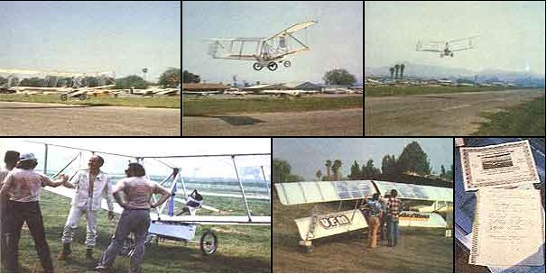

STAFF PHOTOS
TOP OF PAGE: Liftoff.' . . . Larry climbs for altitude on nothing but sun beams . . . and gracefully purrs on down the runway. ABOVE: A good view of the photovoltaic cells in the Solar Riser's top wing. LEFT: The historic occasion is commemorated and logged. FAR LEFT: Congratulations. Larry! Note the T-shirts!